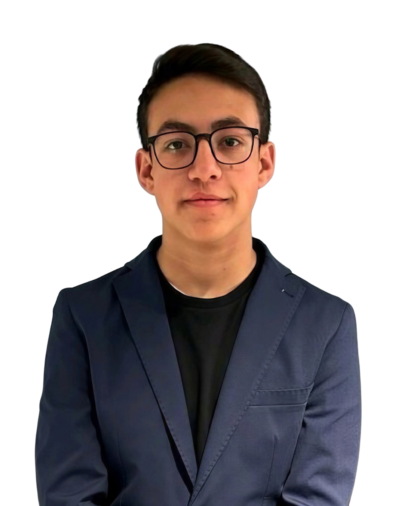

Il mio percorso di crescita personale, responsabilità e leadership attraverso le tappe che hanno tradotto questa filosofia in azioni concrete per me e per la mia comunità.
Mi chiamo Gabriele Cirino Torrisi e sono uno studente del quinto anno dell’indirizzo Informatica e Telecomunicazioni presso l’ITIS “G. Ferraris” di San Giovanni La Punta.
Ho scelto questo percorso perché fin da bambino sono sempre stato interessato al mondo della tecnologia e dei computer, aiutando spesso la mia famiglia nell’utilizzo di dispositivi digitali e nello svolgimento di attività informatiche quotidiane.
Nel corso degli anni scolastici ho avuto l’opportunità di partecipare a diverse esperienze formative, educative ed extrascolastiche che mi hanno permesso di sviluppare not solo competenze tecniche, ma anche capacità relazionali, organizzative e collaborative.
Queste esperienze hanno contribuito alla mia crescita personale, aiutandomi a diventare una persona più responsabile, partecipe e aperta al lavoro con gli altri.
In futuro vorrei continuare il mio percorso nel settore tecnologico, iscrivendomi alla facoltà di Ingegneria Informatica presso l’Università di Catania.
Informatica e Telecomunicazioni
Sviluppatore, educatore e cittadino attivo. "Dall'osservazione alla partecipazione."

Per molto tempo la mia quotidianità è stata abbastanza ripetitiva: scuola la mattina e studio il pomeriggio. Non avevo mai praticato sport e tendevo spesso a rimanere nella mia comfort zone.
Con il tempo, grazie anche all’incoraggiamento della mia famiglia, ho deciso di iniziare a frequentare l’oratorio. Anche se inizialmente ero incerto, questa esperienza si è rivelata molto importante per me, perché mi ha permesso di conoscere nuove persone, creare amicizie significative e vivere experiences che hanno contribuito alla mia crescita personale.
"Capii che se fossi rimasto immobile, la vita sarebbe scorsa senza di me. Dovevo decidere: compiere il passaggio decisivo dall'osservazione alla partecipazione attiva."
Trascina il cursore sopra l'immagine o tocca per confrontare i due stati
Ogni tassello rappresenta una sfida vinta. Clicca su ciascuna card per aprire la sua pagina dedicata con le mie foto reali e una descrizione dettagliata del progetto.
Laboratori di orientamento e informatica per ragazzi di terza media. Un modo concreto per mettermi in gioco e vincere la timidezza.
Sviluppo di piattaforme e strumenti per l'innovazione educativa. Un esercizio cooperativo che unisce creatività e programmazione ed i colori del logo.
Attività di formazione e sviluppo su Liferay, con progettazione e realizzazione di pagine web per clienti reali e lavoro in team.
Servizio educativo presso l'Oratorio di Pedara, gestione del Grest per 500 ragazzi e rappresentante nella Consulta Regionale MGS.
Insegnare il valore della perseveranza e dello spirito sportivo ai giovani atleti, diventando un loro riferimento educativo.
Gestione completa di luci, audio e cabina di regia al Teatro Don Bosco di Pedara. Unire tecnologia e problem solving sotto pressione.
Impegno civico nel quartiere per preservare tradizioni storiche ed eventi rionali. Il mio arrivo nella cittadinanza attiva reale.
Il mio cammino futuro si fonda su due pilastri paralleli che si alimentano a vicenda: la crescita tecnica nel settore tecnologico e l'impegno costante verso gli altri.
Voglio iscrivermi alla facoltà di Ingegneria Informatica presso l’Università di Catania. Ho scelto questo percorso con la precisa intenzione di approfondire e portare ad un livello superiore le materie che ho già studiato e amato alle superiori all'ITIS "G. Ferraris". Allo stesso tempo, per me la crescita non è solo accademica: voglio portare avanti con assoluta costanza il mio percorso di volontariato, dedicandomi sia all’animazione in oratorio sia al ruolo di allenatore PGS per trasmettere ai più piccoli i valori della condivisione e del lavoro di squadra.
“Creare esperienze che aiutino gli altri a crescere per poter crescere io stesso.”